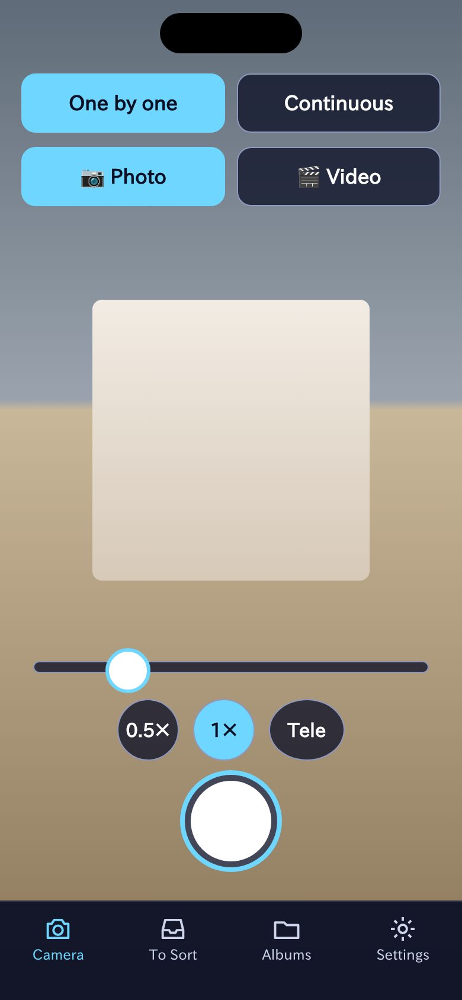
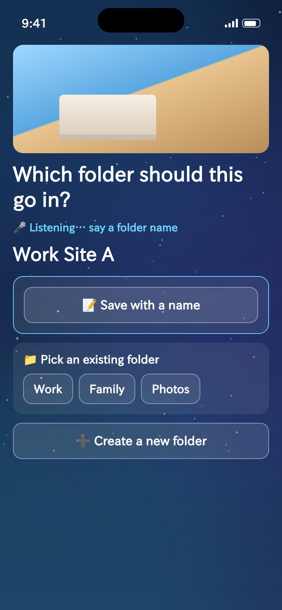
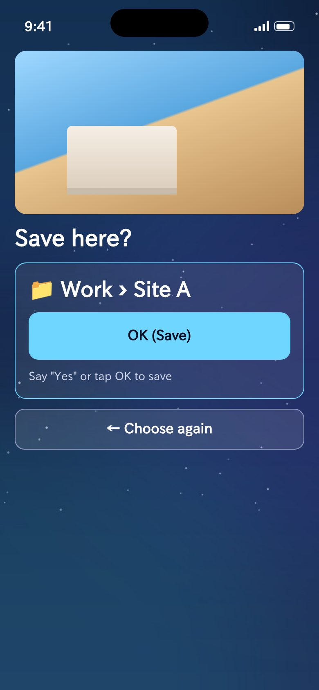
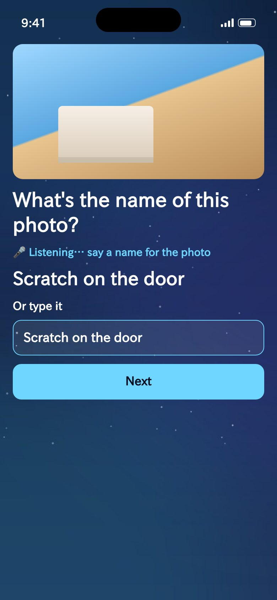
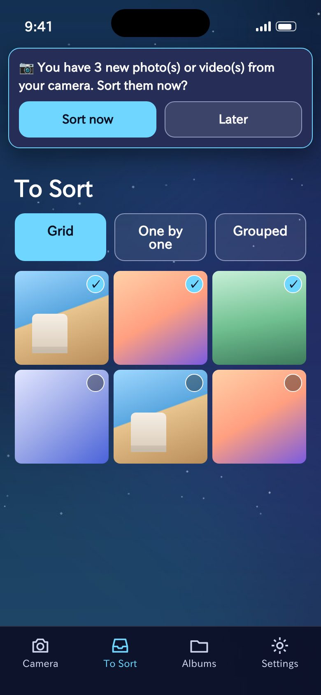
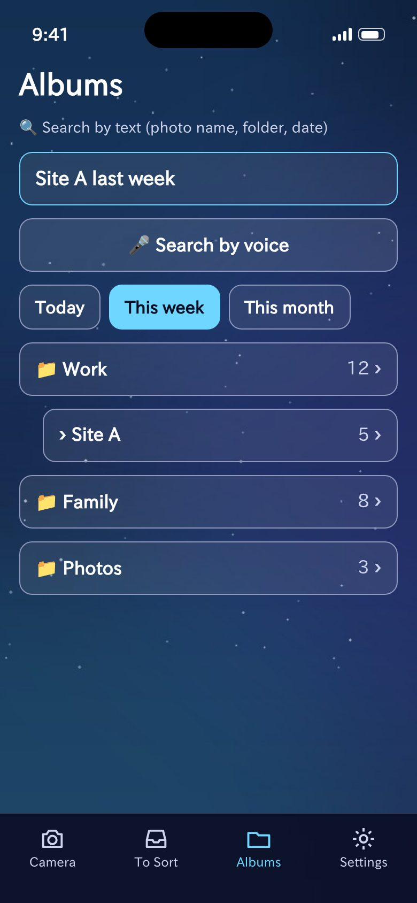
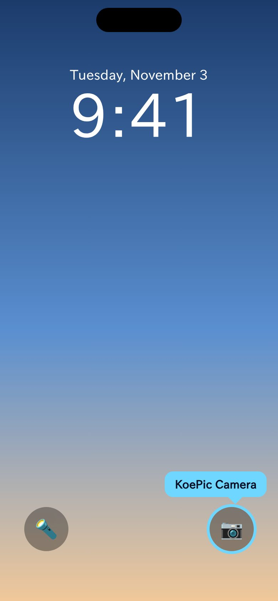

User guide
How to use KoePic
Snap. Say the folder. Save. Your photos are sorted by voice or tap.
1
Take a photo
Use the KoePic camera

2
Say where it goes
Like “Work Site A”

3
Say “Yes” to save
Nothing is saved without your OK

Contents
🚀 Getting started: 3 steps📷 Taking photos🎤 Saying where to save📝 Save with a name (no folders needed)📥 Unsorted (photos from your phone’s camera)🔍 Finding photos📁 Inside a folder🔒 Open the KoePic camera from the Lock Screen⚙️ Settings💾 Backup⭐ KoePic Pro💡 Troubleshooting
🚀Getting started: 3 steps
KoePic organizes photos in 3 steps: take a photo, say where it goes, say “Yes” to save. Where you can’t speak, buttons and typing do the same.
- 1. Take a photo with the KoePic camera (photos from your phone’s camera can be sorted from “Unsorted”)
- 2. Say where it goes, like “Work Site A”
- 3. Say “Yes” when asked “Save here?”, or tap “OK (Save)”
📷Taking photos
- “One by one” asks where to save after each photo. “Burst” lets you take several, then save them together with “Sort now”.
- Switch between photo and video. Tap the shutter again to stop a video.
- Zoom by pinching or with the slider. On iPhone, the 0.5× / 1× / Tele buttons switch lenses.
- If you close the app without saving, the photos are kept and shown the next time you open it.
🎤Saying where to save
- After you take a photo, KoePic asks “Which folder should this go in?” and starts listening.
- Say one name (“Work”) or two levels (“Work Site A”, a folder inside a folder).
- A new name creates a new folder. If a similar folder exists, KoePic asks whether to use it.
- Say “Yes” or “OK”, or tap “OK (Save)”, to save. Nothing is saved without your confirmation.
- If nothing is heard for about 3 seconds, KoePic stops listening and highlights the folder buttons and “Create a new folder”.
- The first time, allow the microphone and speech recognition (you can change this in your phone’s Settings).
📝Save with a name (no folders needed)
- Tap “📝 Save with a name”, then say or type a name like “Scratch on the door”. Photos are saved in the “Photos” folder.
- Search by part of the name later. Open a photo and tap “✏️ Rename” to change or remove the name.

📥Unsorted (photos from your phone’s camera)
- Shows photos and videos on your phone that you haven’t sorted yet, including those taken with the built-in camera.
- In the grid, tap tiles to select several and sort them together. You can also go one by one, or by groups taken close together.
- “Later” skips for now; “Don’t sort” hides a photo from this list.
- After using the built-in camera, KoePic tells you how many new photos there are and offers to sort them.

🔍Finding photos
- Type in the search box or tap “🎤 Search by voice”. Combine photo names, folders, dates (“last week”) and photo/video (e.g. “videos from Trip last week”).
- Quick buttons: Today, This week, Photos, Videos. With no search, the folder list is shown.

📁Inside a folder
- Switch between tiles and calendar. Tap a photo to view it large (previous, next, share, name).
- “Select” lets you move, delete, share (one), or export ZIP/PDF (KoePic Pro).
- “🗑 Delete this folder” removes the folder; “Delete the folder only” keeps the photos and puts them back in Unsorted.
🔒Open the KoePic camera from the Lock Screen
Put a “KoePic Camera” button where the built-in camera button is (iPhone: iOS 18 or later).
- Lock Screen: touch and hold the Lock Screen (unlocked with Face ID) → Customize → Lock Screen → remove a bottom button with “−” → “+” → KoePic Camera → Done
- Control Center: swipe down from the top right → touch and hold an empty area → Add a Control → search “KoePic”
- Action button (iPhone 15 Pro or later): Settings → Action Button → Controls → KoePic Camera
- Android: add the “KoePic Camera” tile to Quick Settings, or long-press the app icon for “Take a photo”.

⚙️Settings
- Text and button size, color, auto-rotate, frosted glass, and where to save (your Photos albums, recommended, or inside KoePic only).
💾Backup
- “Export a backup” saves folders and sorting records to one file; use “Save to Files” to keep it in iCloud Drive or Google Drive. “Restore from a backup” brings it back. KoePic Pro backs up automatically once a day.
⭐KoePic Pro
Unlimited folders (5 on the free plan), ZIP/PDF export, automatic backup and no ads. Monthly, yearly or one-time. After changing phones, tap “Restore purchases”.
↑ Back to top💡Troubleshooting
- Voice not heard: tap “Speak again” and speak right away; check microphone and speech recognition permissions.
- Camera photos missing from Unsorted: check that Photos access for KoePic is set to “Full Access”.
- Requests or problems: Settings → “💬 Send feedback or requests”, or email koepic.support@gmail.com.